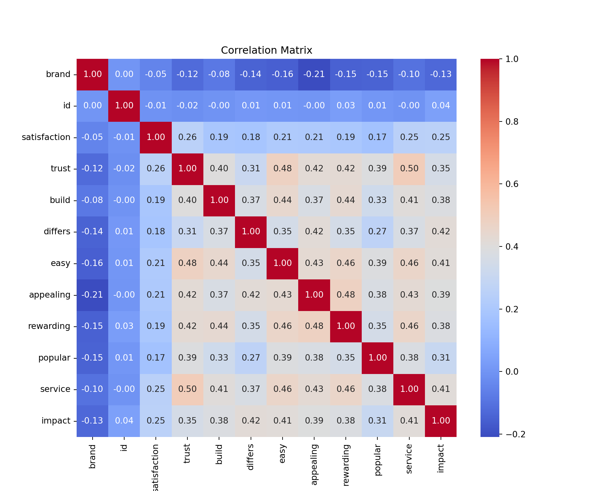

import pandas as pd
import numpy as np
import pyrsm as rsm
import matplotlib.pyplot as plt
import statsmodels.api as sm
import seaborn as snsThis post implements a few measure of variable importance, interpreted as a key drivers analysis, for certain aspects of a payment card on customer satisfaction with that payment card.
Data
I will start by calling the necessary packages in both R and Python to facilitate data handling and analysis.
df = pd.read_csv("data_for_drivers_analysis.csv")library(tidyverse)
library(magrittr)
library(scales)
library(data.table)
library(reticulate)
library(randomForest)
library(relaimpo)
library(psych)
library(caret)
library(stats)
library(gt)df <- read.csv("data_for_drivers_analysis.csv")
df %>%
head(10) %>%
knitr::kable() | brand | id | satisfaction | trust | build | differs | easy | appealing | rewarding | popular | service | impact |
|---|---|---|---|---|---|---|---|---|---|---|---|
| 1 | 98 | 3 | 1 | 0 | 1 | 1 | 1 | 0 | 0 | 1 | 0 |
| 1 | 179 | 5 | 0 | 0 | 0 | 0 | 0 | 0 | 0 | 0 | 0 |
| 1 | 197 | 3 | 1 | 0 | 0 | 1 | 1 | 1 | 0 | 1 | 1 |
| 1 | 317 | 1 | 0 | 0 | 0 | 0 | 1 | 0 | 1 | 1 | 1 |
| 1 | 356 | 4 | 1 | 1 | 1 | 1 | 1 | 1 | 1 | 1 | 1 |
| 1 | 395 | 4 | 1 | 1 | 0 | 1 | 1 | 0 | 1 | 1 | 0 |
| 1 | 586 | 3 | 1 | 1 | 1 | 1 | 1 | 0 | 1 | 1 | 0 |
| 1 | 596 | 2 | 1 | 1 | 1 | 1 | 1 | 1 | 0 | 1 | 1 |
| 1 | 978 | 3 | 1 | 0 | 0 | 0 | 0 | 0 | 1 | 0 | 0 |
| 1 | 987 | 3 | 1 | 1 | 1 | 1 | 1 | 1 | 1 | 1 | 1 |
Data Explanation
- brand: Indicates the brand of the payment card. Coded numerically.
- id: A unique identifier for each record in the dataset.
- satisfaction: The overall customer satisfaction with the payment card, typically on a scale (e.g., 1 to 5).
- trust: Measures the level of trust the customer has in the payment card, likely on a binary scale (0 = no trust, 1 = trust).
- build: Indicates the perception of the card’s build quality. Coded as binary (0 = low, 1 = high).
- differs: Reflects whether the payment card is perceived as different from others. Coded as binary (0 = no, 1 = yes).
- easy: Assesses how easy it is to use the payment card. Coded as binary (0 = not easy, 1 = easy).
- appealing: Indicates whether the card is visually or otherwise appealing. Coded as binary (0 = no, 1 = yes).
- rewarding: Measures whether the card’s rewards program is satisfactory. Coded as binary (0 = no, 1 = yes).
- popular: Indicates if the card is popular or widely accepted. Coded as binary (0 = no, 1 = yes).
- service: Reflects the quality of customer service associated with the card. Coded as binary (0 = poor, 1 = good).
- impact: Measures the perceived impact or influence of the card. Coded as binary (0 = low, 1 = high).
# Correlation plot
plt.figure(figsize=(10, 8))
sns.heatmap(df.corr(), annot=True, cmap='coolwarm', fmt='.2f')
plt.title('Correlation Matrix')
plt.show()
Satisfaction Correlations:
- Trust: The correlation between satisfaction and trust is 0.26. This indicates a moderate positive relationship, suggesting that higher trust in the payment card is associated with higher customer satisfaction.
- Build: The correlation between satisfaction and build is 0.19. This suggests a weak positive relationship, indicating that customers who perceive the card as well-built tend to have higher satisfaction.
- Differs: The correlation between satisfaction and differs is 0.18. This also indicates a weak positive relationship, meaning that customers who find the card different from others tend to be more satisfied.
- Easy: The correlation between satisfaction and easy is 0.21, showing a weak positive relationship. Customers who find the card easy to use are generally more satisfied.
- Appealing: The correlation between satisfaction and appealing is 0.21, which is a weak positive relationship. This suggests that customers who find the card appealing tend to be more satisfied.
- Rewarding: The correlation between satisfaction and rewarding is 0.19, indicating a weak positive relationship. Customers who find the card rewarding are slightly more satisfied.
- Popular: The correlation between satisfaction and popular is 0.17, showing a weak positive relationship, suggesting that more popular cards slightly correlate with higher satisfaction.
- Service: The correlation between satisfaction and service is 0.25, indicating a moderate positive relationship. Good service is an important factor in customer satisfaction.
- Impact: The correlation between satisfaction and impact is 0.25, also indicating a moderate positive relationship. This suggests that the perceived impact of the card on the user’s life correlates with their satisfaction.
Inter-correlations Between Predictors:
- Trust and Service: A high correlation (0.50) between trust and service suggests that these two variables are closely related. Customers who trust the card likely also perceive better service.
- Easy and Appealing: The correlation between easy and appealing is 0.43, indicating that cards which are easy to use are often also considered appealing.
- Rewarding and Appealing: There is a strong correlation (0.48) between rewarding and appealing, suggesting that if a card is rewarding, it is also perceived as appealing.
Key Takeaways
- Moderate Correlations with Satisfaction: Trust, service, and impact have the highest correlations with satisfaction, indicating these are key drivers.
- Weak but Positive Correlations: Build, differs, easy, appealing, rewarding, and popular also influence satisfaction but to a lesser extent.
- Inter-related Predictors: Several predictors are strongly inter-related, which could suggest multicollinearity. This might need to be addressed in modeling efforts.
I will create a statistical summary table, this involves calculating Pearson correlations, standardized regression coefficients, and assessing “usefulness” metrics such as Shapley values for a linear regression, Johnson’s relative weights, and the mean decrease in the Gini coefficient from a Random Forest analysis.
column_order <- c("brand", "build", "differs", "easy", "appealing", "rewarding", "popular", "service", "impact")# Pearson Correlations
pearson_corr <- cor(df)
pearson_corr_satisfaction <- pearson_corr[, "satisfaction"]
pearson_corr_satisfaction <- pearson_corr_satisfaction[names(pearson_corr_satisfaction) != "satisfaction"]
pearson_corr_satisfaction <- pearson_corr_satisfaction[column_order]
pearson_corr_satisfaction %>%
knitr::kable()| x | |
|---|---|
| brand | -0.0492960 |
| build | 0.1918957 |
| differs | 0.1848009 |
| easy | 0.2129847 |
| appealing | 0.2079965 |
| rewarding | 0.1945615 |
| popular | 0.1714253 |
| service | 0.2510982 |
| impact | 0.2545386 |
# Standardized Multiple Regression Coefficients
model <- lm(satisfaction ~ ., data = df)
standardized_coeffs <- summary(model)$coefficients[-1, "Estimate"] / sd(df$satisfaction)
standardized_coeffs <- standardized_coeffs[column_order]
standardized_coeffs brand build differs easy appealing rewarding
0.003667991 0.038617355 0.060142243 0.045339619 0.070477451 0.012160048
popular service impact
0.034814144 0.175916178 0.274838929 # Relative Importance (Johnson's Relative Weights)
rel_weights <- calc.relimp(model, type = "lmg")
rel_weights_co <- rel_weights$lmg
rel_weights_co <- rel_weights_co[column_order]
rel_weights_co brand build differs easy appealing rewarding
0.000342336 0.007163072 0.007269522 0.009260610 0.009136379 0.006820223
popular service impact
0.005621660 0.018348956 0.023622808 # Convert satisfaction to a factor for classification
df$satisfaction <- as.factor(df$satisfaction)
# Random Forest for Mean Decrease in Gini
rf_model <- randomForest::randomForest(satisfaction ~ ., data = df, importance = TRUE)
importance_values <- randomForest::importance(rf_model, type = 1)
importance_values_cols <- c("brand", "id", "trust", "build", "differs", "easy", "appealing", "rewarding", "popular", "service", "impact")
importance_values <- importance_values %>% as.vector()
# Convert the data frame to a named numeric vector
importance_values_co <- data.frame(importance_values_cols, importance_values)
as_named_num <- function(df) {
setNames(df$importance_values, df$importance_values_cols)
}
importance_values_named <- as_named_num(importance_values_co)
importance_values_named <- importance_values_named[column_order]
importance_values_named brand build differs easy appealing rewarding popular service
-2.823551 20.878250 15.718782 18.805249 12.377324 15.472671 17.462664 21.852306
impact
18.575924 # Shapley Values using LMG method
shapley_values <- calc.relimp(model, type = "lmg")
shapley_values_co <- shapley_values$lmg
shapley_values_co <- shapley_values_co[column_order]
shapley_values_co brand build differs easy appealing rewarding
0.000342336 0.007163072 0.007269522 0.009260610 0.009136379 0.006820223
popular service impact
0.005621660 0.018348956 0.023622808 results <- data.frame(
Perception = c("Is offered by a brand I trust", "Helps build credit quickly", "Is different from other cards",
"Is easy to use", "Has appealing benefits or rewards", "Rewards me for responsible usage",
"Is used by a lot of people", "Provides outstanding customer service", "Makes a difference in my life"),
Pearson_Correlations = pearson_corr_satisfaction,
Standardized_Multiple_Regression_Coefficients = standardized_coeffs,
Shapley_Values = shapley_values_co,
Johnsons_Relative_Weights = rel_weights_co,
Mean_Decrease_in_RF_Gini_Coefficient = importance_values_named
)
# Round and convert numerical columns to percentage strings
results <- results %>%
mutate(across(-Perception, ~ round(. * 100, 1))) %>%
mutate(across(-Perception, ~ paste0(., "%")))
gt_table <- gt(results) %>%
tab_header(title = "Perception Analysis") %>%
cols_label(
Perception = "Perception",
Pearson_Correlations = md("Pearson<br>Correlations"),
Standardized_Multiple_Regression_Coefficients = md("Standardized<br>Multiple Regression<br>Coefficients"),
Shapley_Values = md("Shapley<br>Values"),
Johnsons_Relative_Weights = md("Johnsons<br>Relative Weights"),
Mean_Decrease_in_RF_Gini_Coefficient = md("Mean Decrease in<br>RF Gini Coefficient")
) %>%
tab_options(
table.font.size = 'small',
data_row.padding = px(3)
)
gt_table| Perception Analysis | |||||
|---|---|---|---|---|---|
| Perception | Pearson Correlations |
Standardized Multiple Regression Coefficients |
Shapley Values |
Johnsons Relative Weights |
Mean Decrease in RF Gini Coefficient |
| Is offered by a brand I trust | -4.9% | 0.4% | 0% | 0% | -282.4% |
| Helps build credit quickly | 19.2% | 3.9% | 0.7% | 0.7% | 2087.8% |
| Is different from other cards | 18.5% | 6% | 0.7% | 0.7% | 1571.9% |
| Is easy to use | 21.3% | 4.5% | 0.9% | 0.9% | 1880.5% |
| Has appealing benefits or rewards | 20.8% | 7% | 0.9% | 0.9% | 1237.7% |
| Rewards me for responsible usage | 19.5% | 1.2% | 0.7% | 0.7% | 1547.3% |
| Is used by a lot of people | 17.1% | 3.5% | 0.6% | 0.6% | 1746.3% |
| Provides outstanding customer service | 25.1% | 17.6% | 1.8% | 1.8% | 2185.2% |
| Makes a difference in my life | 25.5% | 27.5% | 2.4% | 2.4% | 1857.6% |
If you want a challenge, either (1) implement one or more of the measures yourself. “Usefulness” is rather easy to program up. Shapley values for linear regression are a bit more work. Or (2) add additional measures to the table such as the importance scores from XGBoost.